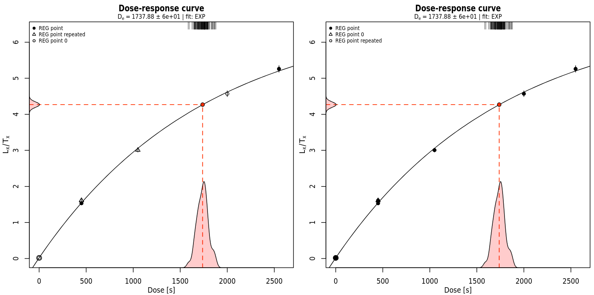

Luminescence Release 1.1.1
Exactly 3 months from our previous release, we are excited to announce the release of version 1.1.1 of the Luminescence R package.
We were initially wondering whether this should be a minor or a major release, as we put a lot of effort in to make the package more solid and refined; we decided to call it a minor release just because there are not many new features in this version. However, there are some important regression fixes, many graphical improvements and also some performance speed-ups. In total we addressed 69 issues in 371 commits.
One new function and some removals
Only one new small function was added in this release, correct_PMTLinearity(),
which can be used to correct the linearity of photomultiplier tube (PMT) counts
to avoid saturation effects.
On the other hand, we removed a few functions that we already set as defunct or deprecated in previous releases:
Analyse_SAR.OSLdata()was an earlier version of what was then reimplemented in a more complete way inanalyse_SAR.CWOSL()calc_Kars2008()had been since several versions just a shim tocalc_Huntley2006()PSL2Risoe.BINfileData()was renamed toconvert_PSL2Risoe.BINfileData()Second2Gray()was renamed toconvert_Second2Gray()
Additionally, we removed get_Risoe.BINfileData() directly because the only
thing it did was to report that it could not do anything. This was a leftover
from ancient designs that never materialised, so we did not go through the
usual process of deprecating a function before its removal.
More removals of deprecated functions will occur in the next release, so if you already see some deprecation warnings, you’d better sorting them out in advance.
Regression fixes
A regression that affected plot_DoseResponseCurve() (and consequently also
analyse_SAR.CWOSL() and analyse_pIRIRSequence()) caused a mismatch between
the legend symbols and the plotted regeneration/dose points.
This can be seen from these plots, where on the left is the one produced by version 1.1.0 and on the right is the fixed version produced by version 1.1.1: 
The difference is at first subtle, but it’s clear that the previous version assigned the plotted the points using the wrong symbols, thus making the plot very confusing and not really usable.
Also plot_DRCSummary() saw its functionality restored, after a regression
prevented the dose-response curve from being plotted, resulting in a mostly
empty plot.
We also discovered a regression in calc_Huntley2006(): after the work we
put during the 1.0.0 release to speed up the function, an unintentional
change snuck it that made it slow again. This had originally passed under our
radar, and we realised only by chance when collecting some numbers on the
performance improvements we could measure in the package. Well, it turns out
that for calc_Huntley2006() we couldn’t see any.
After some investigation, it turned out that the n.MC
argument meant to control the number of Monte Carlo iterations in the function
was also being passed to fit_DoseResponseCurve(). This effectively doubled
the amount of work done for no perceptible gain. This was not the expected
behaviour, and explained the poor performance. After the fix, we saw a 2x
speedup for our default value of 10,000 Monte Carlo iterations.
Correctness and functionality improvements
A question that has come up a few times in the context of the
fit_DoseResponseCurve() is what should be done when the fit produces
a negative De value in the default “interpolation” mode.
The answer to that is that such value is meaningless and
should not be reported. Most of the times, such values are generated if the
dataset is somewhat misspecified or presents other peculiarities.
However, looking into this made us realise that our handling of negative values
was imprecise. In particular, the computation of the De.MC, De.Error and
HPDI (Highest Density Intervals) as implemented in fit_DoseResponseCurve()
was not entirely correct, and produced some confusing results in those cases.
We believe to have solved the issue, and in doing so, we also made the output clearer by reordering some columns and clarifying those that are reported only for internal use.
Also calc_Statistics() has seen a small correctness improvement: what was
previously reported as the weighted median was actually a simple (unweighted)
median. We have now revamped the internal helper function to compute the
weighted median so that it could be used also inside calc_Statistics(), and
now the function reports the expected value.
In smooth_RLum()we have added support for the Poisson smoother of Carter
et al. (2018). This smoother is helpful to ensure that the dark-background
counts signals measured by a photomultiplier tube follow a Poisson statistic:
values that are statistically unlikely to be coming from a Poisson distribution
(according to a user-controlled threshold) can be smoothed out using the
average over four neighbours.
get_RLum() is a function that is used quite often inside the package to
handle and transform the classes of objects generated by Luminescence (such
as RLum.Analysis, RLum.Data.Curve, and so on). An internal optimization
increased the speed of the function, but this is noticeable only when handling
a sufficiently large number of objects. For example, when merging a list of
79 RLum.Analysis objects, each containing 118 curves, we saw the time spent
by merge_RLum() go from 3.5s to 1.5s.
Code size reduction
One small internal change has brought a surprising reduction in number of lines in the package.
Since R version 4.4.0 (released in April 2024), the new %||% operator has
been added to the language. The way it works is rather simple: an expression
like L %||% R returns L if L is not NULL, otherwise it returns R.
In other words, it checks if the first argument is NULL before using it; if
it turns out to be NULL, then it reverts to the second argument, which can
be thought of as a default value.
The interesting thing is that the implementation of this operator is really straightforward, as it’s literally just:
if (is.null(L)) R else L
This means that we could start using it even though at the moment Luminescence
still supports R 4.3, by providing our own implementation.
In practice, this new operator lets us transform this code:
main <- if (is.null(plot.settings$main[[i]])) {
temp[[i]]@recordType
} else{
plot.settings$main[[i]]
}
into this:
main <- plot.settings$main[[i]] %||% temp[[i]]@recordType
When we introduced it in issue 955, it was clear that it could make some of the code less verbose and more readable, but it was a pleasant surprise to see that overall this let us remove over 250 lines of code (that’s almost 1% of the total R code in the package).
Talking about package size, this release contains 26,580 lines of code, a
sizable decrease from the 27,604 of just three months ago. This
is the result of the function removals mentioned above, but also of a massive
consolidation of duplicated code in plot_AbanicoPlot().
Stability improvements
We’ve recently discussed of fuzz testing, and in this release we
spent some time trying to figure out new ways of making Luminescence crash,
so that we could get some insight into it and make it more robust.
In this release we filed and fixed 19 issues discovered by fuzzing, which is the most we’ve ever found, accounting for more than half of the total. This was due to the time spent refining the CBTF package so that it could be released on CRAN.
In terms of testing, our testsuite contains now 3,253 tests, which is a 5% increase from our previous release (we had 3,088 in 1.1.0). Many are snapshot and graphical snapshot tests, which are the type of test that can give us the best protection against unintentional changes.
Upcoming work
In the short term we’ll resume working on RLumShiny, to further expand the
set of applications it provides and perhaps improve its performance.
As always, bug reports are very welcome, in particular if you spot regression or performance problems. And if you’d like to contribute new functionalities or bug fixes, check out our guidelines for contributors.